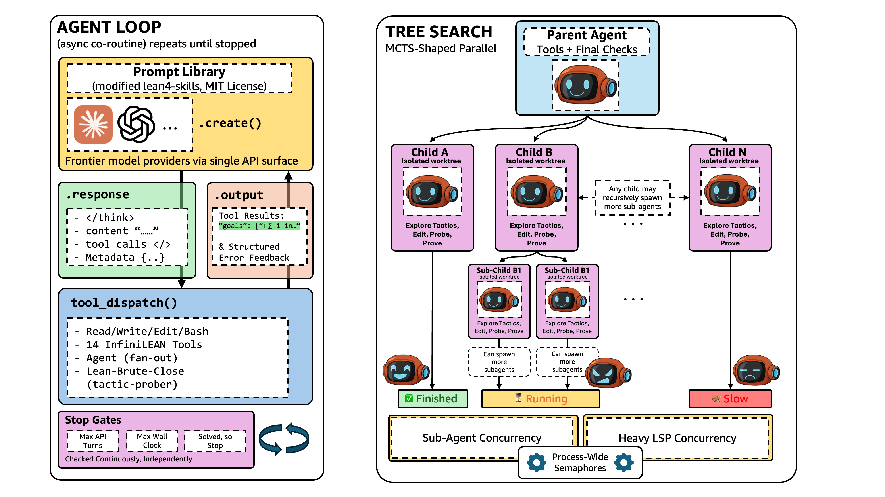
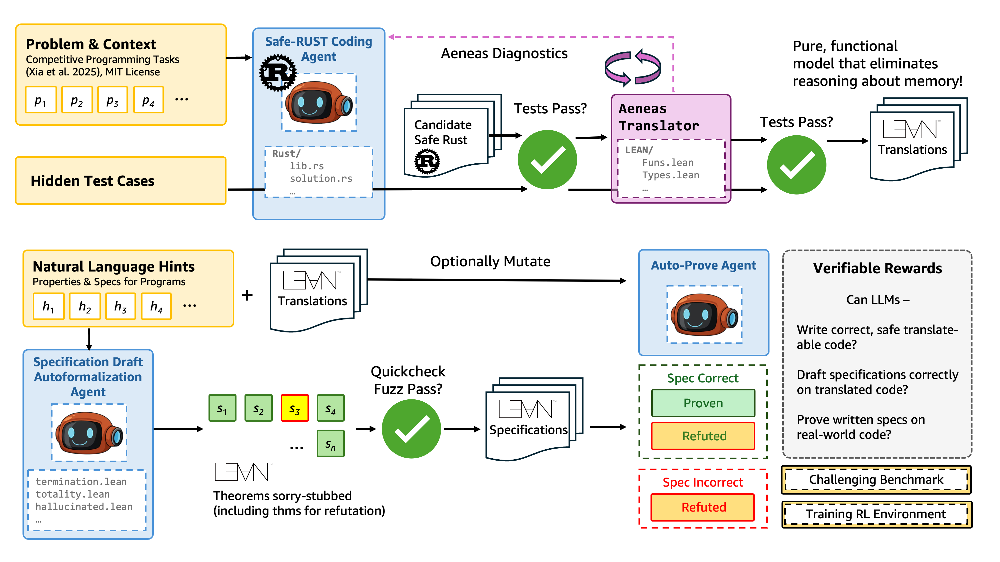
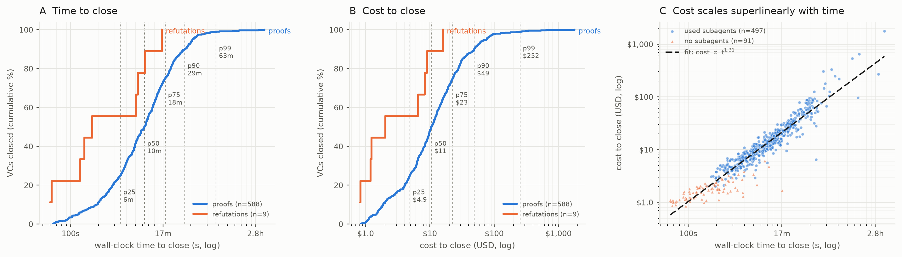

Builds an agentic Lean prover with a stateless Lean elaboration service, and generates Lean verification tasks from Rust code translated with Aeneas.
Abstract
We present EasyProver, a Lean proving system built from recursive agents with isolated contexts, asynchronous search, parallel tactic probing, and an elastic elaboration service. Using an off-the-shelf frontier model with no additional training, it proves 669/672 PutnamBench problems and all six IMO 2026 formalizations and resolves 597/600 NTP4VC verification conditions and all 189 VERINA tasks by proof or refutation. Because these benchmarks are close to saturation, we also introduce Aegis, which converts competitive programming problems into much harder verification tasks over real implementations. The pipeline writes safe Rust solutions, translates them into Lean with Aeneas, generates specifications, and labels each frozen statement with a kernel-checked proof or refutation. It produces 2,045 differentially validated Rust-Lean program pairs and 11,533 candidate specifications. Unlike hand-written benchmarks, these tasks carry implementation-level obligations from fixed-width arithmetic, explicit failure, generated loops, casts, and functionalized mutation. On a stratified sample of 2,000 statements, EasyProver proves 1,054 (52.7%) within a 30-minute budget per statement. The same tasks can also be used to benchmark other provers and as rewards for reinforcement learning.
Problem
LLM-based provers need effective agent harnesses, and established Lean benchmarks for mathematics and code verification are nearly saturated. Existing verified-programming benchmarks are small because they are hand-written.
Approach
EasyProver wraps an off-the-shelf frontier model, with no additional training, in recursive agents that have isolated contexts. It adds asynchronous search, parallel tactic probing, and InfiniLean, a load-balanced stateless Lean elaboration service with Mathlib-preloaded workers. Aegis converts competitive programming problems into verification tasks: it writes safe Rust, translates it to Lean via Aeneas, generates specifications, and labels each statement with a kernel-checked proof or refutation.

Figure 1: EasyProver architecture. Left: An asynchronous agent loop alternates model responses with coding and Lean tool calls. Right: Agents recursively delegate work to children with separate contexts and workspaces. Completed results return to the parent without waiting for unfinished siblings, which keep running; the search ends when the first candidate proof is accepted.

Figure 4: The Aegis pipeline. The coding agent writes safe Rust that passes the retained reference tests, translates through Aeneas , and produces matching Lean outputs. The specification agent writes a property requested to hold or to fail, and a separate proving agent proves or refutes the frozen statement. The resulting tasks serve as a benchmark; used as an RL environment, checked outcomes rew
Results
EasyProver proves 669/672 PutnamBench problems and all six IMO 2026 formalizations, and resolves 597/600 NTP4VC verification conditions and all 189 VERINA tasks by proof or refutation. Aegis yields 2,045 validated Rust-Lean program pairs and 11,533 candidate specifications. On a sample of 2,000 Aegis statements, EasyProver proves 52.7% within 30 minutes each.

Figure 5: NTP4VC time and cost. Left/middle: cumulative time and cost distributions, normalized separately over 588 proofs and nine refutations. Right: proof cost versus time, grouped by subagent use. Unresolved tasks are excluded.
Source
miniF2F
PutnamBench
Putnam '25
IMO '26
Chen et al. (2025b) (initial)
99.6
50.4
–
–
Chung et al. (2026) (+NL)
100.0
88.8
11/12
–
Zhang et al. (2026)
–
100.0
–
6/6
EasyProver (one run)
99.6
99.6
12/12
6/6
Selected competition-math benchmark results (EasyProver vs. prior work)